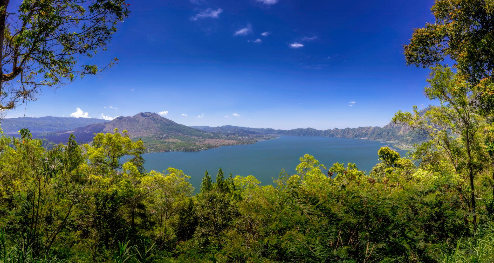
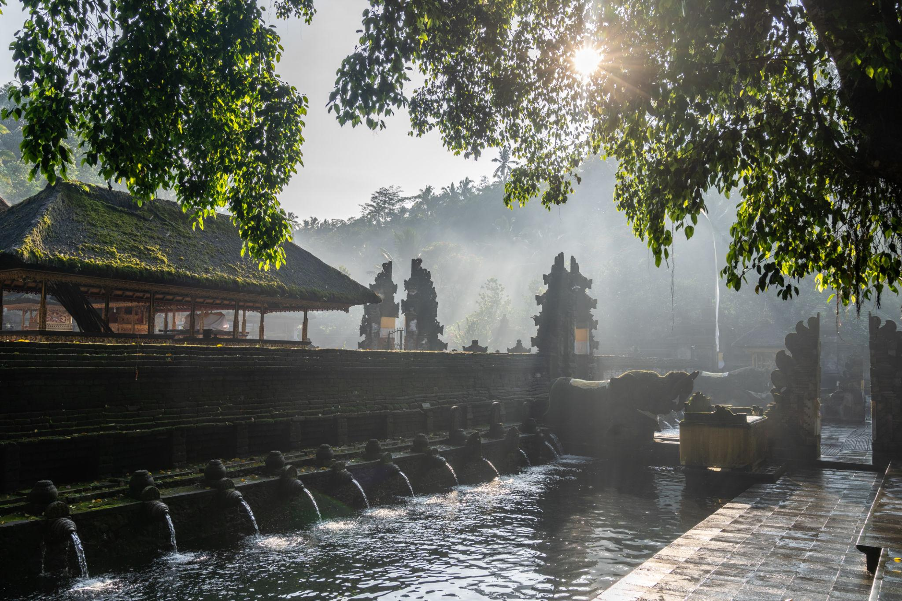

FEATURED STOPS
A Few Places Along the Way
These are suggested stops, not a fixed checklist. Your journey can be adjusted around what interests you.

Mount Batur Viewpoint
Take in panoramic views of Mount Batur and Bali's dramatic volcanic landscape.

Lake Batur
Enjoy the peaceful scenery of Bali's largest volcanic lake surrounded by mountains.

Coffee & Countryside
Slow down for Balinese coffee, local flavors and tropical countryside views.

Tirta Empul Temple
Discover one of Bali's important sacred water temples and local traditions.